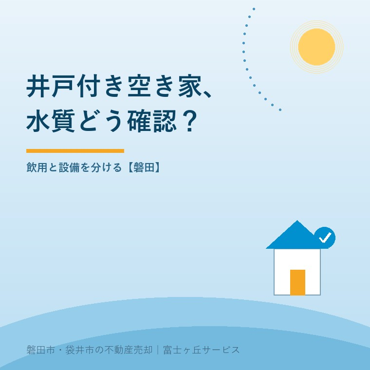

井戸付き空き家の売却、磐田で水質をどう確認？
2026年10月3日｜カテゴリ：空き家・設備の引継ぎ

この記事の要点
実家の井戸は水がきれい。売る前に何を調べればいい？
井戸の用途、検査日・検査項目、設備の状態を整理し、飲用の可否は見た目で判断しません。2026年4月の水道の基準化と個人井戸の検査義務は別です。磐田市・袋井市・森町では、介護施設の運営から不動産事業を始めた富士ヶ丘サービスのような地域密着の会社に相談する選択肢があります。
大石浩之（磐田市／不動産業）です。井戸のある実家を売るとき、「昔から飲んでいた」という家族の記憶と、買主へ説明できる資料は分けて扱います。水が出ること、飲めること、引き渡した後に使えることは、それぞれ確かめる内容が違うからです。
本記事は2026年10月3日に確認した環境省と磐田市の案内を基にしています。井戸を撤去するか、残して売るかの結論を急ぐ記事ではありません。水質検査の記録と使用状況をそろえ、売主が言える範囲をはっきりさせるための手順です。
2026年4月の基準化は、個人井戸への一律義務ではない
環境省の2025年6月30日付報道発表は、ペルフルオロオクタンスルホン酸（PFOS）とペルフルオロオクタン酸（PFOA）を水道水の水質基準へ加える改正を説明しています。施行日は2026年4月1日です。合算の基準は0.00005mg/L以下、同じ量を別の単位で示すと50ng/L以下です。
水道事業者等には検査と基準遵守が求められ、検査回数はおおむね3か月に1回以上が基本です。ただし、この回数をそのまま「実家の個人井戸にも法律で必要」と説明してはいけません。水道の制度と、自家用の飲用井戸の案内を混ぜると、家族の準備も費用の見積りもずれます。
磐田市の「飲用井戸の適正な利用」は、個人所有の井戸水等を飲用に使う場合、水道法による水質検査の義務はないと説明しています。そのうえで定期的な検査を勧めています。外観がきれいでも、有害物質や大腸菌によって飲用の基準を満たさない場合があるためです。
私は、義務の範囲と日常の管理を市が分けて示している点を評価します。「義務があるから検査する」だけでなく、使う人へ何を説明できるかという判断につながります。検査機関の案内へ進めることも、離れて暮らす家族には助けになります。
その上で不動産会社側には注文があります。基準化というニュースだけで売主を怖がらせないことです。反対に、義務がないから確認不要とも言わない。共同利用や施設での利用なら個別の区分も確認し、まず誰が何に使う井戸なのかを聞くところから始めます。
検査済みという一言より、日付と項目を見る
売却準備では、水質検査の結果書にある採水日、採水場所、検査項目を確認します。磐田市は登録された水質検査機関への依頼を案内しています。依頼前には、飲用を予定しているか、長く使っていないか、手元にどんな記録があるかを伝えます。
| 手元で探すもの | 確認する内容 | 説明で避ける飛躍 |
|---|---|---|
| 水質検査結果書 | 採水日・場所・対象項目 | 昔の結果を現在の保証にする |
| 家族の使用メモ | 飲用・洗濯・散水などの用途 | 水が出るから飲めるとする |
| 設備の修理記録 | ポンプや配管の修理時期 | 水質検査で設備も合格とする |
たとえば結果書に「異常なし」と書かれていても、何を調べた結果なのかを読みます。PFOS・PFOAが対象に含まれるか、別に依頼する必要があるかは検査機関に聞きます。一般的な検査という呼び名から、今回気になる物質まで調べていると推測しません。
私は、見積りを頼む段階で「費用の総額」「採水を誰がするか」「結果が出る予定日」をそろえるよう案内します。検査項目も条件も違う見積りを、安い順に並べても判断できません。本記事では個別の検査料金や所要日数を確認していないため、一律の金額や日数は出しません。
採水方法は検査機関の指示に従います。家族が手近なペットボトルに水を入れて運べばよい、と自己判断しないようにします。指定の容器や採水条件があるかを先に聞けば、採り直しで現地へ戻る手間を避けられます。依頼時のメールも結果書と一緒に保管します。
買主へ渡すのは水質と設備を分けた説明
井戸付き空き家の説明資料は、水質の記録、現在の用途、設備の状況を分けて作るのが私の提案です。検査結果があっても、ポンプの作動、配管の行き先、引渡し時の扱いまで同じ資料で確認できるとは限りません。
家族が知っている範囲で、井戸の位置、ポンプの有無、最後に使った時期を書きます。家のどの蛇口につながるか分からなければ「配管経路は未確認」と残す。修理や配管の調査が必要なら、仲介会社を通じて設備業者へ相談します。分からない欄を想像で埋める方が危険です。
磐田市は飲用を続ける場合、水質検査だけでなく、施設周辺の維持管理と毎日の確認も案内しています。検査一回で、その後の管理がなくなるわけではありません。空き家で毎日見に行けない事情があるなら、現在の管理頻度も買主への説明材料にします。
私は、古い検査結果を捨てて新しい紙だけを見せるより、時期ごとに並べる方が誠実だと考えます。記録が途切れた期間も含めて伝えれば、追加確認の範囲を相談できます。検査結果に懸念がある場合の飲用判断は、行政の担当窓口や検査機関等へ確認します。
売買契約で何を約束するかは、契約不適合責任と売却前の告知にもつながります。未確認と書けば何でも免責されるわけではありません。把握している不具合を伝え、調査する範囲、引渡しの状態、費用負担を契約前に相談します。重要事項や契約の個別判断は専門家に確認を。
磐田の実家で、使い道を決める前に資料をそろえる
磐田市の井戸付き実家を離れて暮らす家族が整理するなら、現地で確認する担当と、記録を探す担当を分ける方法があります。市の案内を出発点に、井戸の用途を確かめてから検査機関へ連絡すれば、用途不明のまま一式検査を注文する事態を避けられます。
私はこう考えます。井戸を残すか埋めるかより先に、分かることと分からないことを紙にする。売却するか迷っている家族に、先に撤去費を使わせたくありません。資料が一枚増えれば、売る、保有する、飲用以外で使うという選択を比べる土台になります。
私も、検査を先に頼むべきか、買主の使い方が見えてから項目を決めるべきかは迷います。飲用している現状があるのか、設備が長く止まっているのかで順番が変わるからです。少なくとも、現状不明のまま「飲用可能」を広告の売り文句にする判断はしません。
井戸やポンプを現状で引き渡したい場合も、残置物と現況引渡しの整理と同じく、残す物と引き継ぐ状態を具体的にします。「全部そのまま」の一言では、買主が井戸を使えると思ったのか、存在だけを承知したのかが見えません。
広告を作る段階では、売主が販売図面で確認したい記載も見直します。井戸の有無は特徴ですが、水質の安全性とは別です。検査日の記載や未確認事項をどう示すかを仲介会社と合わせ、説明と広告で温度差を作らないようにします。
今日することは、井戸の資料を一つの袋へ
今日できる確認は、実家の水質検査結果書と修理記録を探し、現在の用途を家族に聞くことです。結果書が見つからないなら、その事実が出発点になります。井戸を残すかどうかを、その日のうちに決める必要はありません。
- 飲用か散水用か、現在の用途を記録する。
- 検査日・項目・採水場所を結果書で確かめる。
- 不明点を検査機関と設備業者への質問に分ける。
- 買主へ示す資料と引渡し条件を仲介会社と相談する。
富士ヶ丘サービスは、介護と不動産を一体で相談し、磐田・袋井の実家の資料整理から支援します。家族が困らない売却のため、私は安全性を言い切る前に、確認できた記録をそろえるよう案内します。
よくある質問
手続きと準備で迷う点を整理します。
- 2026年4月から、自宅の井戸も3か月ごとの検査が義務ですか？
- 水道事業者等に関する検査回数を、個人の飲用井戸へそのまま当てはめません。磐田市は個人所有の井戸等を飲用に使う場合、水道法による検査義務はないものの定期検査を勧めています。共同利用や施設での利用など、個別の設備の区分は別途確認が必要です。用途と利用者を市の担当窓口へ伝えて確認します。
- 昔の水質検査結果があれば、飲める井戸として売れますか？
- 過去の検査結果は、検査した時点と項目についての説明材料です。現在も飲めるという保証にはしません。採水日、採水場所、検査項目を確認し、現在の使用状況や設備の状態と一緒に仲介会社へ渡します。飲用の判断や追加検査は検査機関等へ、売買契約での説明と責任の扱いは専門家に確認を。
- 庭の水やりだけに使う井戸も、検査が必要ですか？
- 飲用井戸に関する市の案内と、水やりなど飲用以外の使い方は分けて考えます。まず実際の用途、飲用配管との関係、買主が予定する用途を確認します。飲用に使っていないことだけで設備の不具合まで説明不要にはしません。検査の要否や項目は用途を伝えて相談し、未検査なら未検査と資料に残します。

この記事を書いた人：大石浩之（磐田市／不動産業・宅地建物取引士）
富士ヶ丘サービス株式会社。介護施設の運営から不動産事業を始め、磐田市・袋井市・森町で、介護と相続、実家の売却を一体で相談できる窓口を設けています。家族が困らない売却のため、資料と現地の条件を一件ずつ整理します。著者プロフィール
本記事は2026年10月3日時点の公開情報と筆者の意見です。制度・数値・手続き・契約条件は変更されることがあります。税務・登記・相続・重要事項説明・契約などの個別判断は、税理士・司法書士・弁護士などの専門家に確認を。